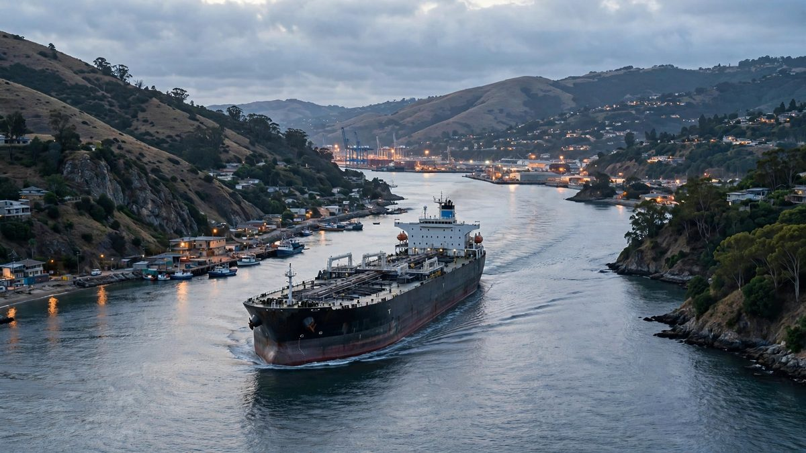

Le pétrole bondit à 104 dollars alors que l'Iran et les Houthis intensifient les attaques contre les pétroliers
Le Brent a atteint son prix le plus élevé depuis la mi-septembre après la frappe d'un pétrolier près du Qatar et des tirs de missiles des Houthis contre des aéroports saoudiens pour le troisième jour de suite. La hausse se fait déjà sentir aux pompes américaines.

Points clés
- Les prix du pétrole ont bondi jeudi à leurs niveaux les plus élevés depuis des semaines, alors qu'une vague coordonnée d'escalade de l'Iran et de ses alliés houthis au Yémen a semé la crainte dans…
- Le Brent, la référence internationale, a terminé à 104,28 dollars le baril, en hausse d'environ 4 pour cent, après avoir touché 105,43 dollars en séance, son prix le plus élevé depuis la mi-septembre.
- Quatre forces ont poussé la hausse en même temps : les attaques iraniennes contre des pétroliers dans le détroit d'Ormuz, les frappes de missiles houthis contre les aéroports et les raffineries…
Les prix du pétrole ont bondi jeudi à leurs niveaux les plus élevés depuis des semaines, alors qu'une vague coordonnée d'escalade de l'Iran et de ses alliés houthis au Yémen a semé la crainte dans le couloir énergétique le plus important du monde et a forcé les investisseurs à réévaluer le risque d'une confrontation plus large au Moyen-Orient.
Le Brent, la référence internationale, a terminé à 104,28 dollars le baril, en hausse d'environ 4 pour cent, après avoir touché 105,43 dollars en séance, son prix le plus élevé depuis la mi-septembre. La référence américaine, le West Texas Intermediate, a terminé à 91,49 dollars, en hausse de 3,6 pour cent, après avoir atteint 92,79 dollars, son niveau le plus fort depuis la fin septembre. Au plus haut du mouvement, les prix gagnaient jusqu'à 5 pour cent sur la journée.
Quatre forces ont poussé la hausse en même temps : les attaques iraniennes contre des pétroliers dans le détroit d'Ormuz, les frappes de missiles houthis contre les aéroports et les raffineries d'Arabie saoudite, un article selon lequel la Maison Blanche envisage des options militaires contre l'Iran, et un ouragan qui a arrêté un quart de la production pétrolière offshore du golfe du Mexique.
Pourquoi cela compte
Le détroit d'Ormuz est la voie maritime étroite par laquelle l'essentiel du pétrole du Moyen-Orient parvient au monde. Quand le trafic des pétroliers y baisse, le marché mondial se tend partout, et les conducteurs le ressentent en quelques semaines. Le prix moyen national de l'essence aux États-Unis se maintient déjà au-dessus de 4 dollars le gallon, et le diesel a dépassé 6 dollars, ce qui augmente les coûts pour les entreprises de transport routier, les fournisseurs de fioul de chauffage et, au bout du compte, le prix des aliments dans les magasins.
Les marchés financiers ont aussi ressenti le choc. Le rendement du bon du Trésor à 10 ans est monté à 5,294 pour cent, près d'un plus haut de 24 ans, avant de revenir à 5,267 pour cent. Les actions ont reculé : le Dow Jones Industrial Average a perdu 96 points, le S and P 500 a perdu 0,2 pour cent et le Nasdaq Composite a baissé de 0,5 pour cent. Les prix de l'énergie alimentent directement le sujet le plus sensible politiquement dans l'économie, le coût de la vie, à moins d'un mois des élections de mi-mandat du 3 novembre.
Le contexte
L'Iran a passé la semaine écoulée à intensifier ses attaques contre la navigation commerciale dans le détroit d'Ormuz et autour. Mercredi tard, un pétrolier transportant du pétrole et des produits chimiques près du Qatar a été touché par plusieurs projectiles, selon la société de renseignement maritime Vanguard et l'agence UK Maritime Trade Operations de la marine britannique, et des victimes ont été signalées. Personne n'a revendiqué la responsabilité, mais des responsables régionaux ont pointé l'Iran. Neuf pétroliers ont été attaqués dans le détroit et autour au cours de la semaine écoulée, et le fournisseur de données maritimes Kpler a estimé les flux par le détroit à environ 9,5 millions de barils par jour dans la semaine achevée mardi, environ 30 pour cent sous les niveaux normaux d'avant la guerre.
Au même moment, les combattants houthis du Yémen ont tiré des missiles contre les aéroports de Riyad et d'Abha, en Arabie saoudite, pour le troisième jour de suite d'attaques contre la capitale saoudienne. Des avions ont été endommagés à l'aéroport international de Riyad, et l'Arabie saoudite a dit que les attaques avaient tué trois personnes, dont un pilote de la compagnie nationale Saudia, et en avaient blessé d'autres ; les médias d'État saoudiens ont chiffré les blessés à 36. Les Houthis ont aussi dit avoir visé une grande raffinerie saoudienne.
La troisième étincelle est venue de Washington. The Atlantic, citant des sources non nommées, a rapporté que la Maison Blanche avait demandé au Pentagone de préparer des options de frappe contre des cibles iraniennes qui pourraient être mises en œuvre avant les élections de mi-mandat du 3 novembre. Et la quatrième tenait à la nature : l'ouragan Isaias a forcé l'arrêt d'environ 500 000 barils par jour de production dans le golfe du Mexique, environ 25 pour cent de la production offshore de la région, Shell et Chevron retirant leurs équipes des plateformes.
Chiffres clés
- 104,28 dollars : clôture du Brent jeudi, en hausse d'environ 4 pour cent ; plus haut en séance de 105,43 dollars, le meilleur depuis la mi-septembre
- 91,49 dollars : clôture du West Texas Intermediate, en hausse de 3,6 pour cent ; plus haut en séance de 92,79 dollars, le meilleur depuis la fin septembre
- 9 : pétroliers attaqués dans le détroit d'Ormuz et autour au cours de la semaine écoulée
- 9,5 millions : barils par jour transitant par Ormuz la semaine dernière, environ 30 pour cent sous la normale
- 500 000 : barils par jour de production du golfe du Mexique arrêtés par l'ouragan Isaias, environ un quart de la production offshore de la région
- Au-dessus de 4 dollars le gallon : le prix moyen national de l'essence aux États-Unis, obstinément élevé ; le diesel est au-dessus de 6 dollars
Et maintenant
Le mouvement s'est calmé jeudi tard après que le président Trump a publié sur Truth Social que les États-Unis « n'attaqueront pas l'Iran à aucun moment avant les élections de mi-mandat » du 3 novembre. Le pétrole a reculé depuis ses plus hauts de séance après cette nouvelle.
Comme l'a résumé The Wall Street Journal, il y a une semaine l'Iran semblait acculé, ses ports bloqués, son levier sur Ormuz en train de glisser. Téhéran et ses alliés houthis tentent maintenant de reprendre l'avantage, en faisant monter les prix du pétrole et en mettant Trump sous pression avant les élections de mi-mandat, sans aller jusqu'à une confrontation à grande échelle. Des responsables américains estiment que retarder une décision sur la reprise des frappes pousse Téhéran vers des concessions, y compris sur son programme nucléaire.
À surveiller : si le trafic des pétroliers par Ormuz continue de se réduire, si les frappes houthis contre l'Arabie saoudite se poursuivent, ce que Trump signale sur une action militaire après le 3 novembre, et si Isaias cause davantage de dégâts à la production du Golfe.
Chronologie
- Oct 2-7, 2026Neuf pétroliers sont attaqués dans le détroit d'Ormuz et autour en l'espace d'une semaine ; les flux par la voie maritime tombent à environ 9,5 millions de barils par jour, environ 30 pour cent sous la normale.
- Oct 7, 2026Mercredi tard, un pétrolier transportant du pétrole et des produits chimiques près du Qatar est touché par plusieurs projectiles, avec des victimes signalées. Personne ne revendique la responsabilité, mais des responsables régionaux pointent l'Iran.
- Oct 8, 2026Des combattants houthis tirent des missiles contre les aéroports de Riyad et d'Abha pour le troisième jour de suite ; l'Arabie saoudite dit que trois personnes ont été tuées et 36 blessées. Le Brent termine à 104,28 dollars le baril, son niveau le plus élevé depuis la mi-septembre.